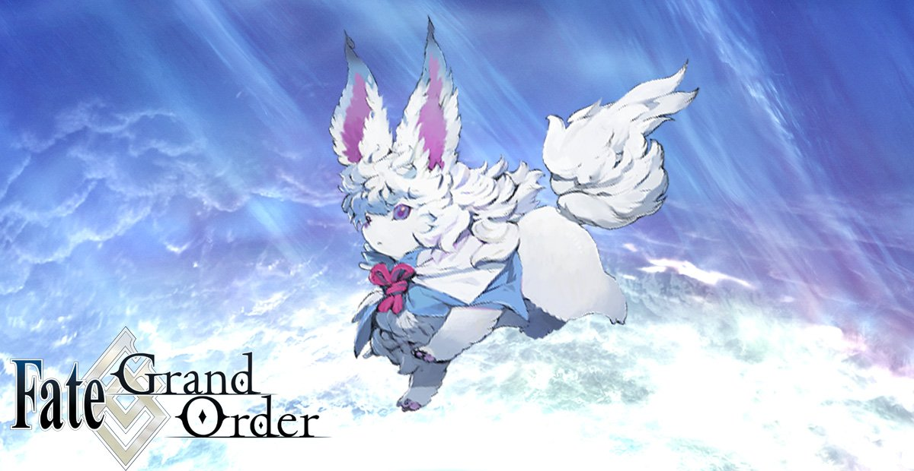

Cath Palug (キャスパリーグ, Kyasu Parīgu?), también conocido como Fou-kun (フォウくん, ?) y Beast IV, es un personaje
que aparece en Fate/Grand Order.

Él es una versión alternativa de Primate Murder que habita en las líneas de
tiempo en las que el sentido común del hombre late con vida y los Veintisiete Ancestros de los Apóstoles
Muertos no existen como organización.